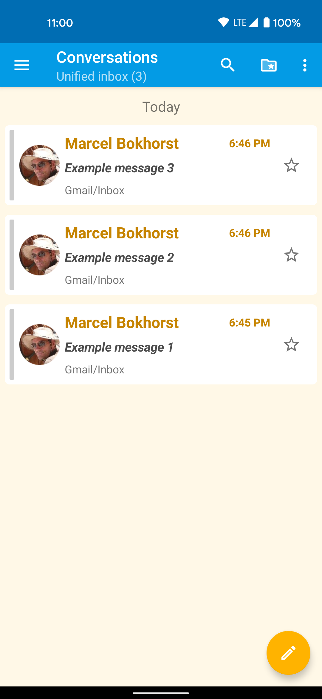
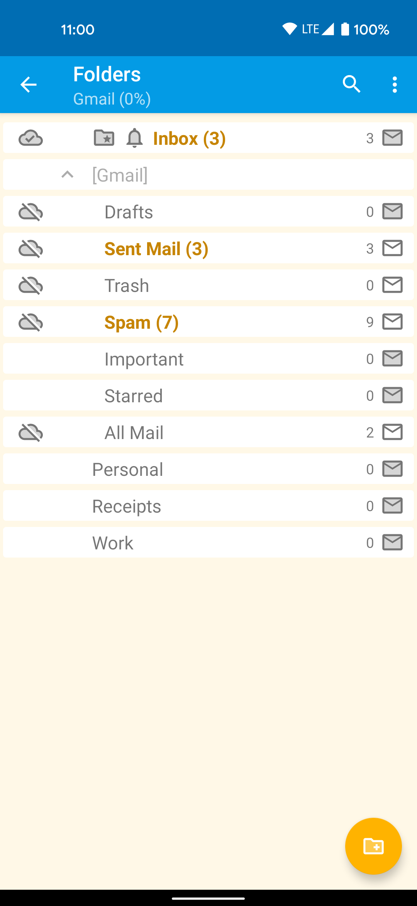

为什么一个个人开发者写的邮箱客户端，能把安全做得比 Gmail 还狠？
FairEmail 的设计哲学拆解：从消息重格式化到统一收件箱，从买断模式到 6 套主题——每一个反直觉的选择背后，都藏着一套明确的原理和取舍。
问题：为什么 FairEmail 敢跟 Gmail 对着干？
我用 Gmail 很多年了，直到有一天我发现一件事——Gmail 会在你点钓鱼链接之前，先帮你把可疑邮件标进垃圾箱，但如果它漏标了一封，你点开后看到的就是邮件原始 HTML，里面藏着什么脚本、什么追踪像素、什么 iframe，你完全不知道。更讽刺的是，Gmail 自己也在扫描你邮件里的内容来投放广告。
FairEmail 不一样，去它的FairEmail官网就能感受到这种对安全的执着。它的反钓鱼逻辑是层层剥离、主动确认，从打开邮件的那一刻起就不把"原始 HTML"直接交给系统渲染。而它的统一收件箱、买断定价、6 套主题不开放自定义——这些选择看起来都跟主流产品反着来，我花了好一阵才想明白背后的原理。
拆解一：消息重格式化——为什么不直接渲染？
大多数邮箱客户端的流程是这样的：收到一封邮件 → 提取 HTML 正文 → 丢给 WebView 渲染 → 完事。这个流程快，但有个致命问题：WebView 会执行邮件里的任何 JavaScript，会加载外链 CSS，会渲染 iframe，会处理 onclick 事件处理器。如果有人给你发了一封带恶意脚本的邮件，你点开的瞬间，脚本就在你手机上跑了。
FairEmail 的做法完全相反。它不把原始 HTML 塞给 WebView，而是先过一层重格式化处理器——像安检一样把邮件正文拆开来，一件一件检查：
<script>标签？直接扔掉，不解释<link rel="stylesheet">外链样式？扔掉，防止邮件通过加载外部 CSS 文件来追踪你到底有没有打开这封邮件<iframe>、<object>、<embed>？扔掉，这些标签能嵌入任意外部网页或插件onclick、onmouseover这类事件处理器？全部剥掉，防止鼠标悬停时触发恶意行为
剥离完之后，剩下的是一份净化过的 HTML：加粗、斜体、列表、段落这些排版信息保留，内嵌图片保留（因为附件里已经包含了，不会额外请求外部资源），但所有代码执行路径都被切断了。

这一层处理的成本其实不低——每封邮件打开前都要跑一次解析器，在低端手机上可能比直接渲染慢个几百毫秒。但换来的好处是：即使某封邮件真的藏了恶意脚本，在 FairEmail 里也根本跑不起来。
拆解二：链接确认弹窗——为什么点个链接还要问我？
我第一次用 FairEmail 点链接时有点不习惯——每点一个 URL，它都弹出对话框问我："你确定要打开 xxx 域名的这个链接吗？"而且它会把链接的完整实际 URL 给你看，不是邮件里显示的那行文字。
为什么要多这一步？钓鱼邮件最常用的手法就是链接欺骗：邮件里显示「paypal.com/verify」，实际 URL 是「paypal-login-verification.fake.com/scam.php」。Gmail 和 Outlook 其实也做链接安全检查，但它们更多是后台判定、静默拦截；FairEmail 的逻辑是：不替你做决定，只把信息摆出来。
除了链接弹窗，FairEmail 还会在邮件内容顶部显示认证状态警告——SPF、DKIM、DMARC 三项邮件行业标准认证，任何一项失败都会有明确的中文提示："发件服务器未被授权代表此发件人域名发信"或者"邮件签名无效，可能被篡改"。Gmail 也会检查这些，但通常只在非常明显的异常时才标红，FairEmail 则把警告放在更显眼的位置，而且不会自动把可疑邮件合并进主收件箱。
这一套组合拳下来，FairEmail 的安全防护其实已经覆盖了从打开邮件到点击链接到打开附件的全链路——但有个重要前提：最终判断还在你自己。它不扫描附件里的恶意软件代码（那是安全软件的活），它的职责是让你不容易被欺骗点击。
拆解三：统一收件箱——合并显示 ≠ 物理复制
FairEmail 的统一收件箱是它最受欢迎的功能。如果你同时管着三四个邮箱账户，从左侧抽屉点一下就能把所有账户的邮件合并成一个连续的时间线——听起来像是把邮件复制到了一个新文件夹里？
其实不是。它是在界面层做的虚拟合并。每封邮件仍然归属于原来的账户和文件夹，在统一收件箱里删除一封邮件，实际是删除它所在账户的那一封。星标、已读、移动文件夹这些操作都会正确同步回原始账户。它没有复制任何数据，只是把多个数据源的视图拼在一起。
这个设计的好处是零冗余、零同步冲突——如果某个账户的同步断了，不影响其他账户的邮件显示。坏处是它需要在后台同时维持所有账户的 IMAP IDLE 推送连接，账户太多时会稍微费电。但对于大多数人来说，这是一个非常划算的取舍。
拆解四：为什么只有 6 套主题，还不让自定义颜色？
FairEmail 开发者在FairEmail文档里专门解释过这个设计决策：限制主题选项是为了保证整个 App 的视觉一致性和维护成本可控。它不像 Gmail 那样提供几十种主题或允许上传自定义背景图，而是精心设计了 6 套预设配色方案，每套都有 Light / Dark / Black 三种背景变体，总共 18 种。
黑色背景变体专门为 OLED 屏幕设计——纯黑像素点不发光，省电效果最好。还有一个"颜色反转"开关，对于色盲用户或对某些配色特别敏感的人很实用。

这个设计让我想起了一个著名的原则：好的软件应该帮用户做决定，而不是给用户无限选择。FairEmail 的定位是"高效收发邮件"，过多的主题选项反而会让用户在选择上花太多时间——这和它的核心目标是冲突的。
拆解五：买断模式——为什么跟订阅制反着来？
FairEmail 免费版已经非常完整了，安装包从下载渠道就能拿到——无限 IMAP/POP3 账户、无限邮件地址、统一收件箱、双向同步、OpenPGP 加密、反钓鱼、全文搜索、无广告无分析无追踪。然后它的 Pro 版是一次买断（约 55 元人民币），终身使用，没有任何隐藏续费。
开发者明确表示过，买断模式更符合他对软件价值的理解。很多用户抱怨"这个功能应该免费"的时候，他的回应是：Pro 功能不是骗钱，是为了覆盖开发成本。没有广告收入，没有订阅收入，Pro 内购是唯一的资金来源。
这个定价策略的原理很简单：当一个产品没有广告也没有追踪时，用户就是唯一的收入来源。订阅制要求用户持续付费，对个人开发者来说维护成本更高，因为用户流失率会直接影响收入稳定性。买断制虽然单笔金额低，但一旦付费，用户就没有理由再离开了——这让开发者可以安心做长期维护。
取舍：这套设计的代价
公平地说，FairEmail 不是完美的。它不做附件恶意代码扫描，不支持 IMAP 文件夹自动分类（Pro 才有），没有云同步——换手机时要导出配置文件手动迁移。Material You 动态颜色支持非常低调，不会像 Gmail 那样大面积彩色。内部锚点链接在 Android WebView 中无法跳转，这是平台限制没法修。
多账户管理是它的强项，但账户太多时后台维持 IMAP IDLE 连接会比较费电。搜索索引需要手动触发建立，不是开箱即用。
判断：谁应该用 FairEmail？
如果你同时管着两三个以上邮箱账户、在意隐私（不想让 Google 扫描你的邮件内容）、讨厌广告和追踪、愿意为一次买断付费，FairEmail 可能是 Android 上最好的邮箱客户端选择。
如果你需要云同步、喜欢花里胡哨的自定义主题、或者只需要一个 Gmail 客户端——FairEmail 可能不是最优解。Gmail 在 Google 生态内的无缝体验是 FairEmail 比不了的。但 FairEmail 的安全防护和隐私承诺，也是 Gmail 给不了的。
写这篇文章的时候我一直在想，为什么一个个人开发者能做出这样的产品。可能正是因为没有资本压力、不需要给投资人交差，才能做出这些反直觉但原理清晰的设计选择。FairEmail 没有云同步，但整理它资料的仓库倒是做了三重备份——在GitHub、Gitee 和 GitCode 上都能找到，不用担心哪家访问不了。